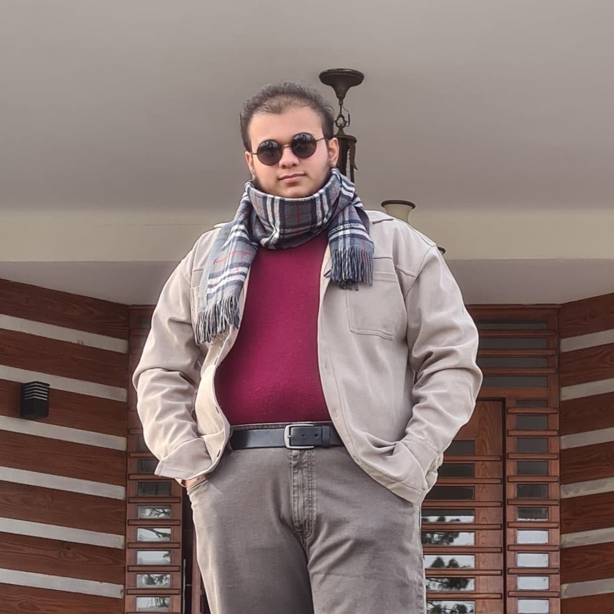

My Story
Engineer by training, creator by passion
I'm Ahmed Nadeem — a multi-disciplinary creator working at the intersection of technology, literature, and visual art. My journey began with a curiosity about how things work, which led me to engineering and computer science.
But I quickly realized that technical knowledge alone wasn't enough. The most meaningful work happens when analytical thinking meets creative expression. Whether I'm writing a Python script to automate reconnaissance or composing a poem about digital solitude, I'm driven by the same impulse: to understand and articulate the patterns that shape our world.
Currently pursuing a degree in Mechatronics Engineering while independently exploring cybersecurity, ethical hacking, and OSINT. When I'm not at the terminal, you'll find me with a paintbrush in hand or a notebook full of story ideas.
I believe in depth over breadth, craftsmanship over speed, and the quiet power of work that speaks for itself.
